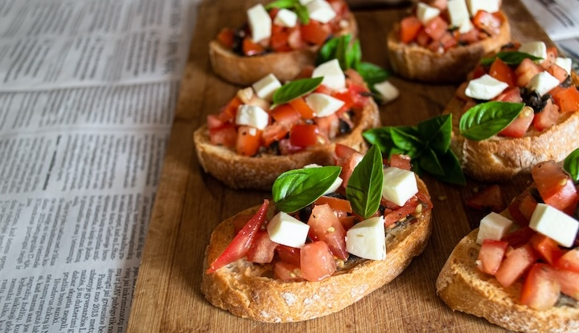

Bruschetta: A Taste of Italian Sunshine

Bruschetta isn't just a starter; it's a trip down memory lane. It takes me back to Grandma's kitchen, where summer afternoons were painted with the scent of tomatoes and basil.
I remember the way she'd pluck tomatoes fresh from her garden, their ripe aroma filling the air as she diced them with care. Basil leaves, vibrant green and aromatic, were torn by hand, releasing their herbal fragrance.
Together, we'd toast thick slices of bread until golden and crispy. Grandma would rub them with garlic, imparting a subtle flavor. Then came the toppings—a simple mix of tomatoes, basil, a drizzle of olive oil, and a pinch of salt.
As we savored each bite, laughter echoed in the kitchen. The flavors burst in my mouth, tangy tomatoes and the earthiness of basil, mingling with the warmth of toasted bread. It wasn't just a snack; it was a moment of connection, of love shared through a simple dish.
Even now, with every bite of bruschetta, I'm transported back to those cherished moments, feeling Grandma's love in every flavorful bite.
Bruschetta
Ingredients:
- Baguette or Italian bread,sliced
- Ripe tomatoes, diced
- Fresh basil leaves, chopped
- Garlic cloves, minced
- Extra-virgin olive oil
- Balsamic vinegar (optional)
- Salt & pepper to taste
Instructions
- Preheat the oven to 375°F (190°C). Place the bread slices on a baking sheet and toast them in the oven until they're golden and crisp.
- In a bowl, mix together the diced tomatoes, chopped basil, minced garlic, a drizzle of olive oil, and a splash of balsamic vinegar if desired. Season with salt and pepper.
- Once the bread slices are toasted, rub them lightly with a garlic clove for added flavor.
- Top each slice with the tomato mixture, allowing the flavors to meld together.
- Serve immediately and enjoy this flavorful appetizer!